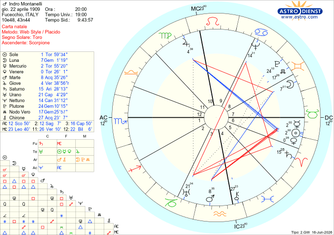

Il cielo racconta
Indro Montanelli
Fucecchio, 22 aprile 1909
TEMA NATALE DI INDRO MONTANELLI
Nato a Fucecchio il 22/04/1909 alle Ore 20:00
Toro Ascendente Scorpione

Indro Montanelli: il "Generatore di Conflitti" e il Mistero della Sposa Bambina
Ci sono nomi che sono un destino. Indro Alessandro Raffaello Schizogene Montanelli. Indro è la versione maschile di Indra, il dio indiano del tuono, delle tempeste e della guerra. Schizogene, dal greco, significa letteralmente "generatore di conflitti". Sembra che i genitori abbiano consultato le stelle prima di farlo nascere: Montanelli è stato il fulmine che ha attraversato il Novecento italiano.
Anarchico, non addomesticabile, amato e odiato sia dalla destra che dalla sinistra. Ha rischiato la fucilazione sotto il fascismo, ha rifiutato la nomina a Senatore a vita e ha fondato giornali da zero pur di non piegarsi ai potenti (Berlusconi compreso).
Ma cosa si nascondeva dietro l'acciaio di questo Maestro del giornalismo? La sua mappa astrale rivela segreti che lasciano senza fiato.
1. Il "Cancelliere della Verità": un Uomo senza compromessi
Perché il pubblico percepiva Montanelli come un monumento di credibilità, un Maestro d'onestà intellettuale anche per i suoi nemici giurati?
Il suo Sole è congiunto a Venere nel Toro in Sesta Casa, in trigono perfetto a Giove in Vergine in Decima Casa (la realizzazione professionale).
Nell'astrologia dialettica, il Toro è il segno della trasparenza assoluta, l'esatto opposto dello Scorpione (ambiguo per natura). Questa geometria descrive un uomo che ha costruito una carriera leggendaria sul lavoro quotidiano, con una coerenza etica che non ammetteva sconti o scorciatoie.
2. Il "Signor Brambilla" e il Mercurio Solitario in Toro
Montanelli ripeteva sempre che un giornalista deve scrivere per farsi capire dal lettore comune, il "Sig. Brambilla" o il lattaio, rinunciando ai fronzoli intellettuali.
La precisione da brividi
3. L'ossessione della Libertà: un giornalismo senza catene
C'è un gesto che definisce l'intransigenza di Montanelli: sbattere la porta. Nel 1974 lascia il Corriere della Sera per fondare Il Giornale pur di sfuggire ai condizionamenti politici; vent'anni dopo, lascia la sua stessa creatura quando Silvio Berlusconi entra in politica, rifiutando di farsi addomesticare. Per lui la libertà di stampa non era un posizionamento ideologico o un vanto intellettuale. Era una necessità biologica, quasi fisica.
La firma delle stelle:
La combinazione micidialeTradotto dal codice celeste
4. Il "Fiutaccio" teatrale e la Storia d'Italia
Oltre che giornalista, Montanelli fu uno storico popolarissimo. Il suo metodo? Preferiva inventare aneddoti falsi pur di dipingere un ritratto psicologicamente vero di un personaggio e lo scopo era che restasse impresso nella mente del lettore. Un vero istinto teatrale.
Questo genio da affabulatore nasce dall'Ascendente Scorpione, ma soprattutto da Plutone isolato in Gemelli nell'Ottava Casa. Qui Plutone perde le sue tinte oscure e diventa brillante, legato alla parola, al doppio e alla maschera. Insieme a un forte Urano in Aquario nella Terza Casa (la comunicazione), creava il cortocircuito perfetto: "Uso la finzione e l'opportunismo narrativo se questo serve a svelare la verità profonda delle cose".
5. Il caso "Destà": la verità sulla Sposa Bambina
Nel 1935, durante la guerra in Eritrea, il ventiseienne Montanelli sposò una ragazzina indigena di 12-14 anni di nome Destà, comprata dal padre secondo l'usanza del "madamato". Un episodio che ancora oggi gli costa accuse infamanti di pedofilia e colonialismo.
Cosa dice il cielo di questo scandalo?
La Luna (che per un uomo rappresenta la partner) si trova in Gemelli nella Settima Casa (il matrimonio). Traduzione astrologica letterale: sposa bambina.
I valori Toro (matriarcato e protezione) indicano che Montanelli non fu un dominatore violento, ma si prese cura di lei materialmente per tutta la vita. Tuttavia, la quadratura tra la Luna e Giove in Vergine in X Casa, fotografa esattamente il destino di questa unione: un matrimonio malvisto dall’opinione pubblica, percepito come un abuso di potere e di rango (con il coinvolgimento della Vergine). Le stelle non giudicano, descrivono.
6. La guerra invisibile: il demone della depressione
Il grande guerriero pubblico combatteva in privato contro un mostro invisibile: terribili crisi di depressione e attacchi di panico ciclici, ereditati dalla madre.
Il colpo di scena psicologico: Il governatore del suo Ascendente, Plutone, si trova nella misteriosa Ottava Casa e governa la Dodicesima (le prove psichiche). L'Io di Montanelli era costretto a scendere periodicamente negli inferi del sistema nervoso (Plutone collocato nel segno dei Gemelli).
A sigillare questa prigione emotiva c'era la quadratura tra Saturno in Ariete (la vitalità bloccata) e Nettuno in Cancro (l'ignoto che scorre nelle radici familiari). Un guerriero d'acciaio fuori, un uomo paralizzato dall'ansia dentro.
🌟 Il verdetto della ricerca astrologica
Attenzione: il Tema Natale non è divinazione magica o determinismo cieco. Se analizzassimo questa carta al buio, non potremmo prevedere il nome di "Destà" o di "Berlusconi". Ma la verifica ex-post ci mostra una coerenza geometrica spaventosa: i pianeti descrivono un campo di potenziali che Montanelli ha canalizzato perfettamente. È questa la dignità dell'astrologia: un modello di studio oggettivo e sistematico dei potenziali umani.
Vedere come la Luna in Gemelli (il segno dell'infanzia) nella casa del matrimonio descriva alla lettera la storia della sua "sposa bambina" toglie ogni dubbio sulla precisione del cielo, non trovi?